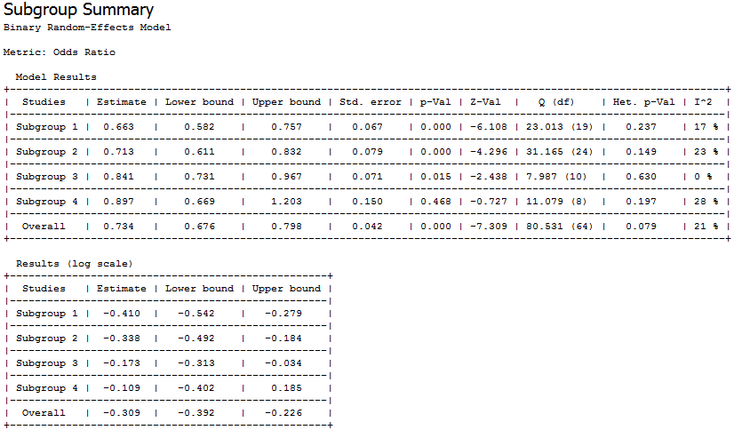
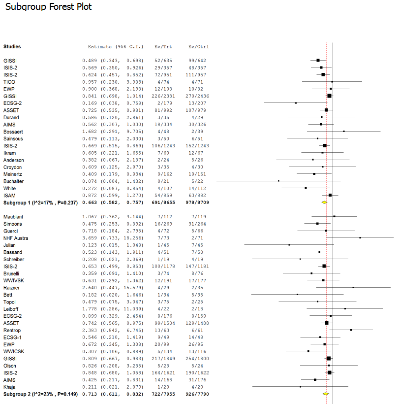
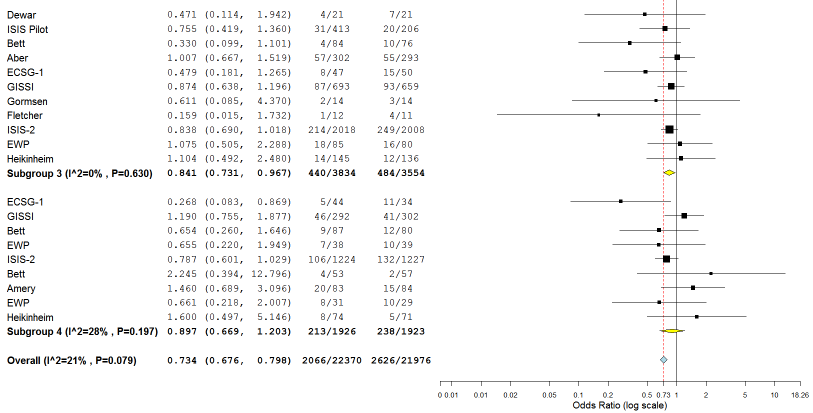

This section provides an example that illustrates how to perform a subgroup meta-analysis. To run the example, do the following steps.
- Select Open on the File menu and open the file meantime.oma.
- Select subgroup meta-analysis from the Analysis menu.
- In the select covariate dialog, select treatment group.

In this example, there are 4 treatment groups, which are based on the time to treatment covariate:
- Group 1: 0 - 3 hours
- Group 2: 3.1 - 5 hours
- Group 3: 5.1 - 9.5 hours
- Group 4: 9.6 - 22 hours
- In the Method & Parameters dialog, select the method and parameters for the analysis.
- Click OK.
This displays the subgroup summary and plot, as shown
below.



Back to top
 | Leave-One-Out Meta-Analysis | | Editing a Data Set |  |